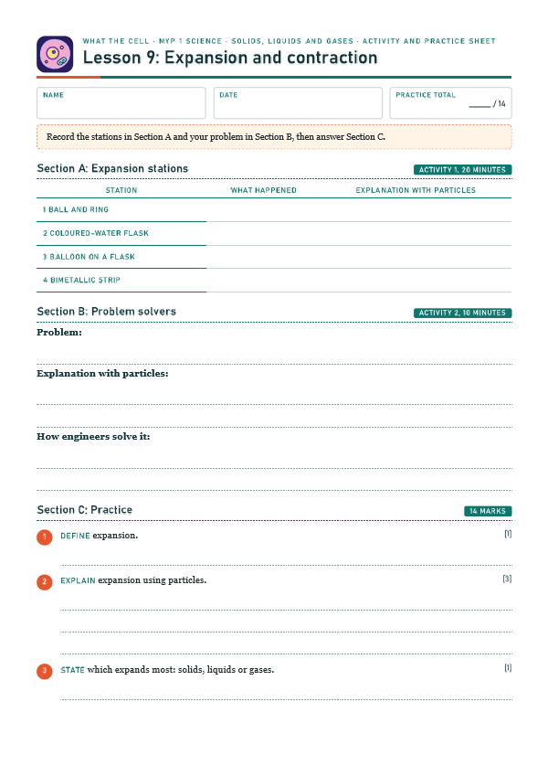

By the end of the lesson you can
- Describe expansion and contraction
- Explain expansion using particles
- Compare expansion in solids, liquids and gases
- Describe uses and problems of expansion
Keys: arrows or a presentation clicker move the slides, F for full screen. Slides with a red dot have a video or simulation.
Videos (all 5 minutes or less)
- 1:22
Thermal Expansion Demo, Bimetallic Strip
Physics Demos. While you watch: What happens to the strip when it is heated? Slide 11.
Simulations
- Lab
Print and practise

Activity and practice sheet
Used in the lesson’s activities, with practice questions. Your teacher has the answers.
Download (PDF)Lesson 9 slides
All 17 slides in one file, to read again or print. The video buttons on the slides open YouTube.
Download the slides (PDF)Revising? The Revision tab on the unit page has the unit notes and review.
Class activity pack
Everything to print for the lesson’s activities: picture cards, sorting mats, station cards with their kit lists, and the teacher’s set-up notes. Print it before class.
Download the activity pack (PDF)Notes: Expansion and contraction
expand
Get bigger when heated. For example: railway tracks in summer.
contract
Get smaller when cooled. For example: a jar lid on a cold jar.
thermal expansion
Expansion caused by heating. For example: sea level rise.
expansion joint
A gap that lets a structure expand safely. For example: in bridges.
bimetallic strip
Two metals joined together that bend when heated. For example: in thermostats.
thermometer
An instrument that measures temperature. For example: liquid rises when warm.
Key words
| expand | get bigger when heated |
|---|---|
| contract | get smaller when cooled |
| expansion joint | a gap so structures can expand |
| bimetallic strip | two metals that bend when heated |
| thermometer | measures temperature |